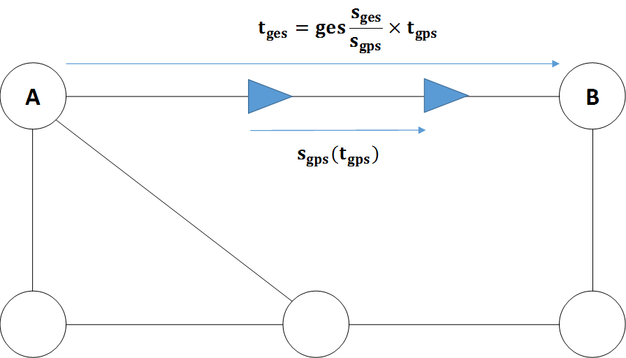
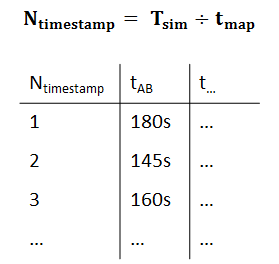
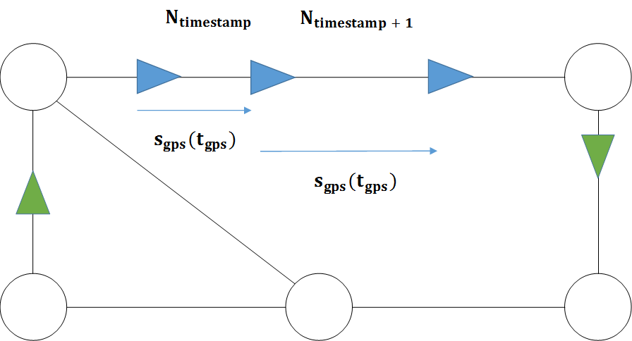

Hilfestellung:
Lesen sie die Fahrdaten ein. Reduzieren sie dabei bereits die Menge der Daten durch
gezieltes Einlesen nur relevanter Informationen.
Berechnen sie die Verkehrslage der Straßen. Lesen sie die GPS-Daten ein.
Suchen Sie nun fuer jede Straße und jeden Verkehrslage-Aktualisierungsschritt zwei
geeignete GPS-Eintraege eines Fahrzeuges um somit die Verkehrslage zu diesem Zeitpunkt
zu berechnen.
Ermitteln sie die Route des Zielfahrzeugs. Achten sie bei der Suche nach der moeglichen
Route darauf, dass die Geschwindigkeit sich je nach Verkehrslage veraendert und somit nicht nur
beim Wechseln von Straßen, sondern auch moeglicherweise waehrend der Fahrt auf einer
Straße engepasst werden muss.


